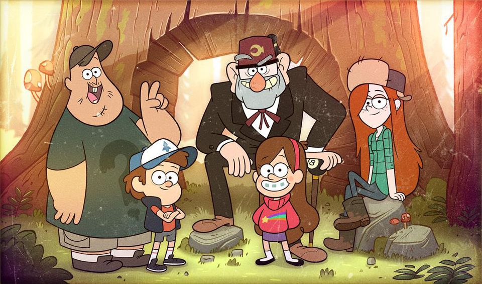

About Them
For their summer vacation, 12-year-old twins Dipper and Mabel Pines are dropped off from their home in Piedmont, California, to the fictitious town of Gravity Falls, Roadkill County, Oregon to spend the summer with their Great Uncle Stan Pines (often shortened to Grunkle Stan), who runs a tourist trap called the "Mystery Shack". Things are not what they seem in this small town, and with the help of a mysterious journal that Dipper finds in the forest, they begin unraveling the local mysteries.
Gravity Falls Group Picture
Gravity Falls Books
- Gravity Falls Journal 1
- Gravity Falls Journal 2
- Gravity Falls Journal 3